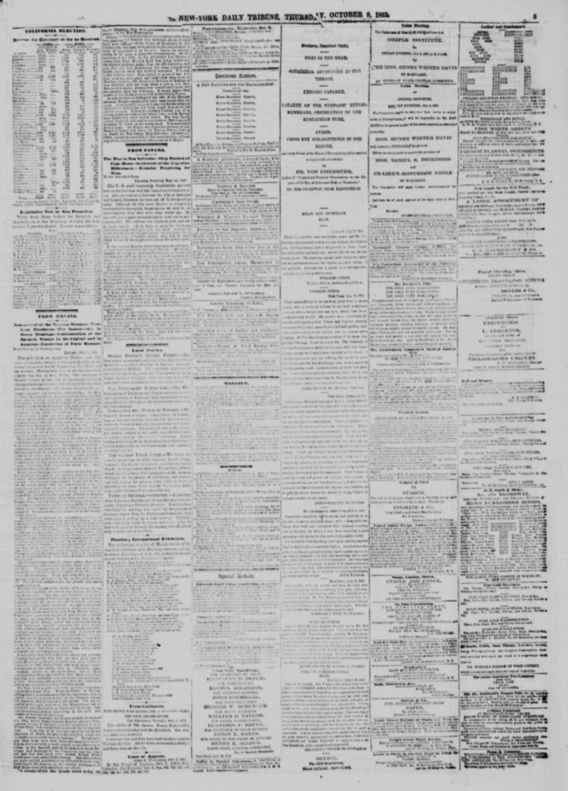
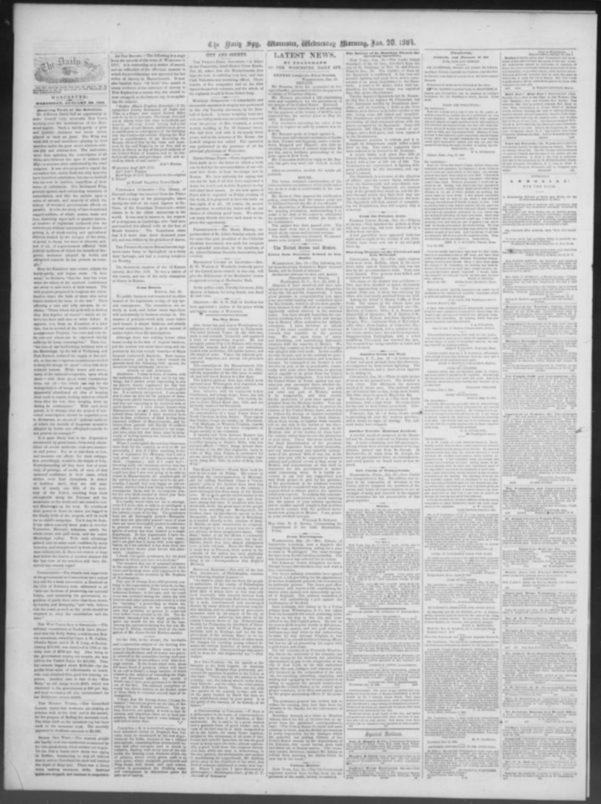

Annexation to Spain and the Restoration WarLa anexión a España y la Guerra de la Restauración
The eraLa era
American newspapers covered these years through the lens of their own Civil War. When President Pedro Santana annexed the Dominican Republic to Spain in 1861, editors weighed the story in terms of Union and Confederate strategy, the future of slavery in the Caribbean and old arguments about European empires in the Americas. The coverage began with the act itself: Santana's proclamation of March 10, 1861, printed in American papers, closed with cries of long live Doña Isabel II and liberty, and correspondents reported Spanish troops arriving from Cuba and Puerto Rico while the population was disarmed town by town.
Los periódicos estadounidenses cubrieron estos años con el lente de su propia Guerra Civil. Cuando el presidente Pedro Santana anexó la República Dominicana a España en 1861, los editores pesaron la historia en términos de la estrategia de la Unión y la Confederación, el futuro de la esclavitud en el Caribe y viejos argumentos sobre los imperios europeos en las Américas. La cobertura comenzó con el acto mismo: la proclama de Santana del 10 de marzo de 1861, impresa en periódicos estadounidenses, cerraba con vivas a Doña Isabel II y a la libertad, y los corresponsales informaban de tropas españolas llegadas de Cuba y Puerto Rico mientras la población era desarmada pueblo a pueblo.
Many editors condemned Spain's return; few doubted the island mattered mainly for what it meant to larger powers — Spain's own prime minister defended the annexation by arguing that if Spain had not occupied that part of the island, the Americans would have. On the Dominican ground the years were lived as betrayal and then as a second founding. The Grito de Capotillo of August 16, 1863, opened the Restoration War, and the war reports that followed are of guerrilla war: Spanish columns harassed terribly by Dominican guerrillas, defeats at the river Jomera and at Puerto Plata, supplies captured, Spanish losses a Spanish officer himself put above two thousand, against rebel forces he estimated at twenty to thirty thousand.
Muchos editores condenaron el regreso de España; pocos dudaron de que la isla importaba sobre todo por lo que significaba para las potencias mayores: el propio primer ministro español defendió la anexión argumentando que, si España no hubiera ocupado esa parte de la isla, lo habrían hecho los estadounidenses. En el terreno dominicano, los años se vivieron como una traición y luego como una segunda fundación. El Grito de Capotillo del 16 de agosto de 1863 abrió la Guerra de la Restauración, y los partes que siguieron son de guerra de guerrillas: columnas españolas terriblemente hostigadas por guerrilleros dominicanos, derrotas en el río Jomera y en Puerto Plata, suministros capturados, pérdidas españolas que un oficial español estimó en más de dos mil, frente a fuerzas rebeldes que calculó entre veinte y treinta mil.
The fighters who waged it — Gregorio Luperón among them — drove Spain out by 1865. What American papers filed as foreign news is remembered in the Dominican Republic as the war that won independence a second time.
Quienes la pelearon — Gregorio Luperón entre ellos — expulsaron a España en 1865. Lo que los periódicos estadounidenses archivaron como noticia extranjera se recuerda en la República Dominicana como la guerra que ganó la independencia por segunda vez.
PlatesLáminas

The Acquisition of St. Domingo by Spain.

From Havana.

The Natives of St. Domingo Thrash the Invading Spaniards.
Key articlesArtículos clave
The Acquisition of St. Domingo by Spain.La adquisición de Santo Domingo por España.
The paper describes the island of Haiti as the largest, richest, and most important of the West India islands next to Cuba, noting that since its independence it has been divided into Haiti, a former French colony occupying about two-fifths of its area, and the "republic of Dominica" (the Dominican Republic), a former Spanish colony holding the remaining three-fifths. According to the report, the Dominican Republic has a population of about 105,000, roughly one-tenth of whom are white, and maintains an army of 20,000 men and a navy of seven small vessels. In 1852, its total exports—chiefly mahogany, ebony, and other precious woods—amounted to one and a half million dollars, while its imports, largely from the United States, totaled slightly more.
El periódico describe la isla de Haití como la más grande, rica e importante de las Antillas después de Cuba, señalando que desde su independencia se ha dividido entre Haití, antigua colonia francesa que ocupa cerca de dos quintas partes de su superficie, y la llamada «república de Dominica» (la República Dominicana), antigua colonia española que posee las tres quintas partes restantes. Según el informe, la República Dominicana tiene una población de unos 105,000 habitantes, de los cuales aproximadamente una décima parte son blancos, y mantiene un ejército de 20,000 hombres y una armada de siete embarcaciones pequeñas. En 1852, sus exportaciones totales —principalmente caoba, ébano y otras maderas preciosas— ascendieron a un millón y medio de dólares, mientras que sus importaciones, procedentes en gran parte de los Estados Unidos, superaron ligeramente esa cifra.
From Havana.Desde La Habana.
A high-grade Spanish officer reported that Spanish losses in Santo Domingo exceeded 2,000, and estimated rebel forces numbered between 20,000 and 30,000. Additionally, the newspaper reported that New York and Boston papers were hoaxed regarding a bombardment of Puerto Plata by Spaniards, clarifying instead that Col. Ar.zon landed at night, drove out the Dominicans, and liberated Gen. Fuero and his troops.
A tenor del extracto, un alto jefe militar español comunicó que las bajas españolas en Santo Domingo superaban los 2.000 hombres y calculó que las fuerzas rebeldes oscilaban entre 20.000 y 30.000 combatientes. Asimismo, el diario aclaró que los periódicos de Nueva York y Boston habían sido objeto de un bulo sobre un presunto bombardeo de Puerto Plata por parte de los españoles, explicando que en realidad el coronel Ar.zon desembarcó de noche, desalojó a los dominicanos y liberó al general Fuero y a sus tropas.
The Natives of St. Domingo Thrash the Invading Spaniards.Los nativos de Santo Domingo derrotan a los españoles invasores.
The \1 reported that Spanish forces suffered defeats and heavy casualties against Dominican guerrillas, including losses at the river Jomera and a severe battle on December 20th at Puerto Plata. The report noted that Dominicans held St. Christobal, cut off Spanish land communications, captured various supplies and equipment, and placed Santanna in a critical position. Additionally, the newspaper included a brief dispatch from Fairfax Court House regarding a minor skirmish with rebels near Flint hill.
El \1 informó que las tropas españolas sufrieron derrotas y copiosas bajas frente a las guerrillas dominicanas, incluidos reveses en el río Jomera y una recia batalla librada el 20 de diciembre en Puerto Plata. El parte señalaba que los dominicanos dominaban San Cristóbal, habían cortado las comunicaciones terrestres de los españoles, capturado diversos pertrechos y provisiones y colocado a Santana en una situación sumamente comprometida. Además, el periódico incluyó un breve parte de Fairfax Court House relativo a una escaramuza menor con rebeldes confederados cerca de Flint Hill.
ErasEras · The era's articlesLos artículos de la era · On the timelineEn la cronología